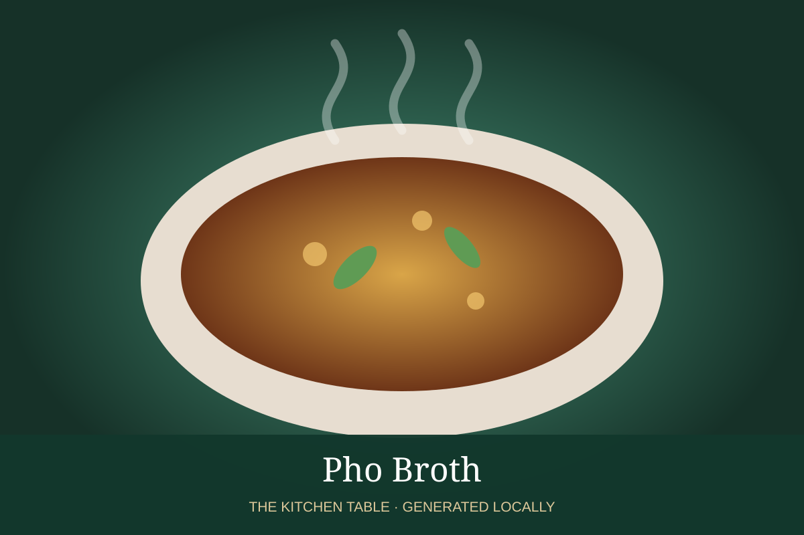

← Back to all recipes
BROTH & STOCK · VIETNAMESE
Pho Broth
Clear aromatic Vietnamese beef broth with charred onion, ginger, and warm spices.
Broth & StockVietnamese

Ingredients
- 5 lb beef bones
- 1 onion, halved
- 4 inches ginger
- 3 star anise
- 1 cinnamon stick
- 4 cloves
- 1 tbsp coriander seed
- 1 tbsp fish sauce
- 5 qt water
Preparation
- Blanch bones, drain, and rinse thoroughly.
- Char onion and ginger; toast spices.
- Combine with fresh water and simmer very gently 5–6 hours.
- Strain; season with fish sauce and salt.